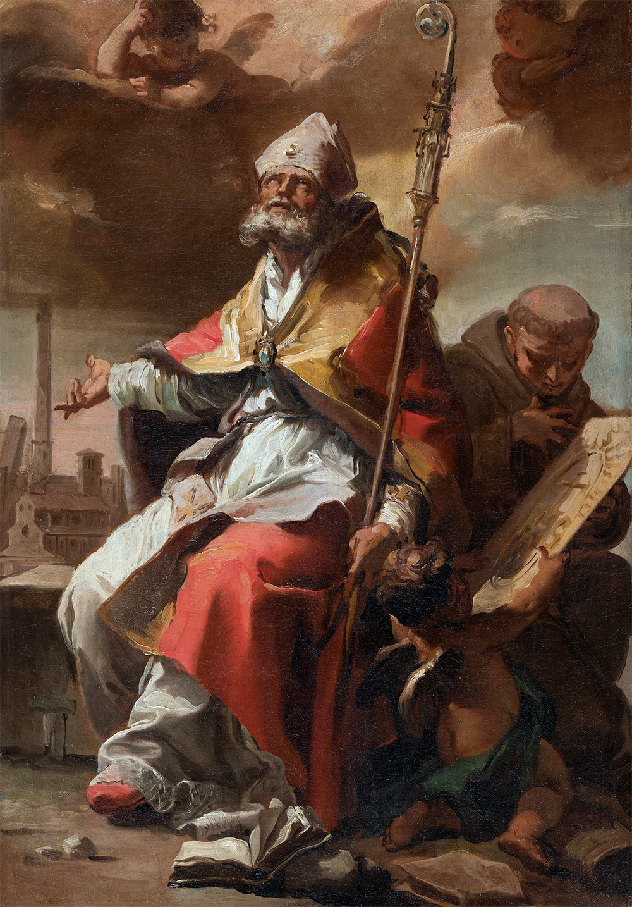
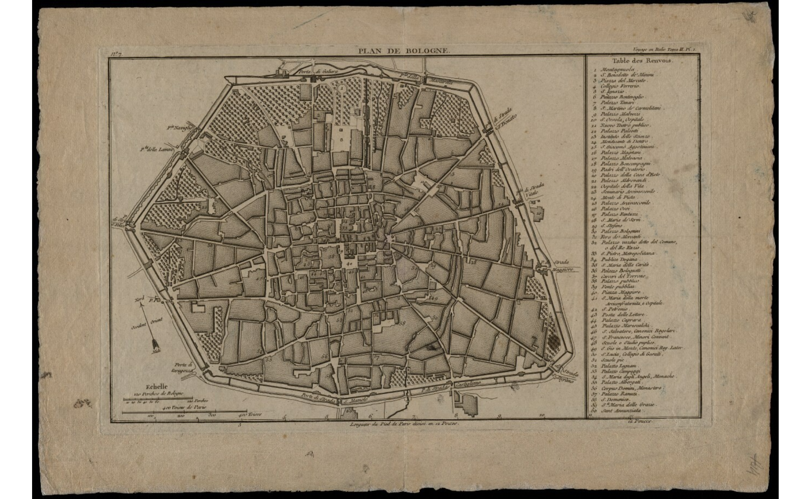

Scopri i contenuti



Un viaggio digitale nei manoscritti di Marcello Oretti
Questo sito presenta una raccolta digitalizzata e descritta dei manoscritti B104, B109 e B110 di Marcello Oretti, importante erudito e collezionista bolognese del Settecento. I suoi scritti testimoniano la ricchezza delle collezioni artistiche private a Bologna, fornendo preziose informazioni su autori, opere e luoghi.
La navigazione è possibile per autore, opera e luogo, con supporto di mappe e immagini per esplorare il contesto storico e culturale della città.
Consulta i manoscritti, esplora le opere, naviga tra i luoghi di Bologna descritti da Marcello Oretti.